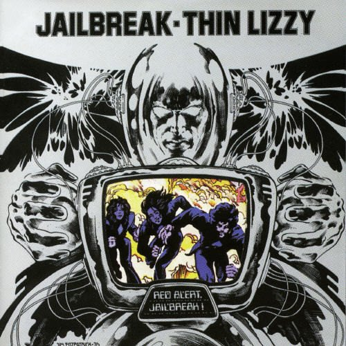

The Band:
Thin Lizzy is an Irish hard rock band that was most popular during the 70's, with a couple hits in the early 80's. Their most popular songs outside of this album are Dancing In the Moonlight, Whiskey In The Jar, and Don't Believe A Word.

Thin Lizzy is an Irish hard rock band that was most popular during the 70's, with a couple hits in the early 80's. Their most popular songs outside of this album are Dancing In the Moonlight, Whiskey In The Jar, and Don't Believe A Word.
This album is important because it popularized the use of twin-guitar harmonies and the song lyrics had great storytelling. This storytelling is clearly evident in songs like "Cowboy Song", detailing the story of a cowboy traveling through to the US. I've always been fond of "The Boys Are Back In Town" since I was a kid, and after hearing the rest of the album it certainly matches up.